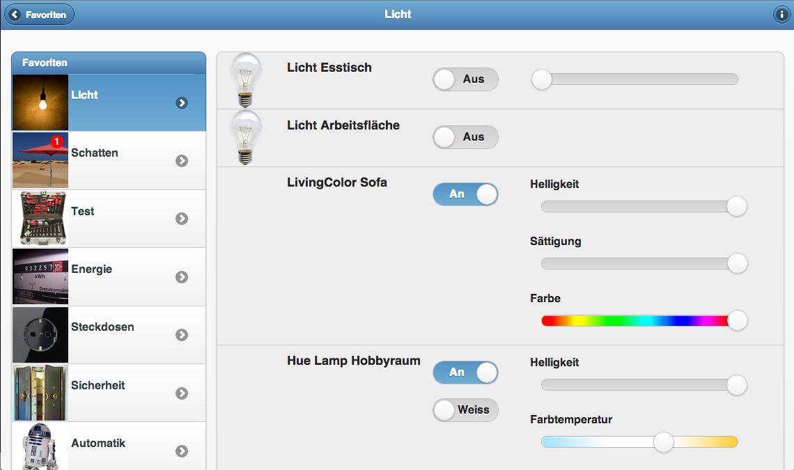
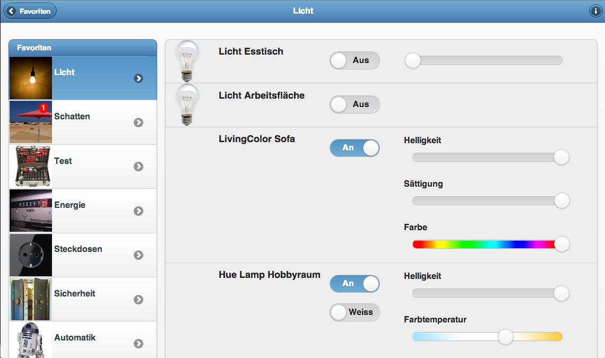

DashUI ist eine webbasierte Visualisierung für die HomeMatic CCU mit uneingeschränkter Gestaltungsfreiheit. Anzeige- und Bedienelemente (sogenannte "Widgets") können frei auf beliebigen Ansichten ("Views") platziert werden
Live-Demo von DashUI mit diversen Beispiel-Views die uns von Usern eingesendet wurden
Das DashUI Projekt verfügt über eine eigene Webseite und ist dort dokumentiert.
In diesem Foren-Thread haben einige DashUI-Benutzer Screenshots hochgeladen.
Bluefox (der Entwickler der "hqWidgets") hat ein Video einer mit DashUI erstellten Oberfläche veröffentlicht.
Die Roadmap und das Changelog werden auf der Github Projektseite gepflegt.
Tabellarische Darstellung der CCU.IO Logs
Kann komfortabel in DashUI und yahui eingebunden werden.
Die Roadmap und das Changelog werden auf der Github Projektseite gepflegt.
Interaktive grafische Darstellung der CCU.IO Logs, basiert auf Highstock.
Kann komfortabel in DashUI und yahui eingebunden werden.

Die Roadmap und das Changelog werden auf der Github Projektseite gepflegt.
Ein Codemirror basierter Editor für CCU.IO Scripte
ScriptGUI (Script Graphic User Interface) ist eine grafische Programmierumgebung, die die Erzeugung von CCU.IO-Scripten ohne Programmierkenntnisse ermöglicht.

Es gibt zwei Typen von Bausteinen: FBS (Funktionsbausteine) und MBS (Masterbausteine). MBS sind Bausteine wie Trigger, Programmboxen und Kommentare. Sie lassen sich direkt per Drag&Drop einfügen. FBS sind alle Bausteine, die zum Programmieren benutzt werden. Sie lassen sich nur in Programmboxen einfügen. Jede Programmbox ist ein eigenständigen Programm, ein direkter Datenaustausch ist nicht vorgesehen. Trigger führen eine oder Mehrere Programmbox aus. Wobei sie Daten an das Programm übergeben die über die Triggerdatenbausteine genutzt werden können.
Program Dateien werden unter
ccu.io/www/ScriptGUI/prg_Store/
abgespeichert. Sie besitzen die Endung .prg und sind im json Format gespeichert
Die erzeugten Scripte werden unter
ccu.io/scripts/
abgespeichert. Sie besitzen die Endung .js
ScriptGUI ist eine auf HTML5, CSS3 und Javascript basierende Webanwendung.
Die Roadmap und das Changelog werden auf der Github Projektseite gepflegt.ein sehr leichtgewichtiges Framework zur Erstellung von CCU.IO WebUIs. Gemacht für alte Browser und langsame Clients. "Vanilla" JavaScript, es werden keine Bibliotheken wie jQuery o.Ä. eingesetzt.
Weitere Informationen und Dokumentation sind auf der Github Projektseite zu finden.
yahui ist eine jQuery Mobile basierte Weboberfläche für CCU.IO und ist für die Bedienung auf Tablets und Smartphones optimiert. yahui erfordert keine aufwendige Einrichtung, einfach Installieren und benutzen.
 



Die Roadmap und das Changelog werden auf der Github Projektseite gepflegt.
yahui benötigt einen modernen Browser (Chrome/Chromium/Iron, Firefox oder Safari).
Es werden nur Favoriten angezeigt die dem Benutzer "admin" zugeordnet sind.
Systemvariablen können in yahui bearbeitet werden. Wie bei WebMatic können Systemvariablen über ein (r) in der Variablenbeschreibung auf nur-lesen gesetzt werden.
Bilder/Icons können einfach via Drag&Drop hochgeladen werden. Dazu muss sich yahui im "Edit-Modus" befinden (im Info-Dialog - erreichbar über den i-Button oben rechts - kann der Edit-Modus aktiviert und deaktiviert werden). Es sind alle Arten von Bilddateien erlaubt, empfohlen wird jedoch ein quadratisches PNG mit 230x230 Pixel Größe und leichter Transparenz. Wenn bereits Bilder von WebMatic vorhanden sind können diese einfach in das Verzeichnis yahui/images/user/ kopiert werden.
Sortieren ist im Edit-Modus ebenfalls via Drag&Drop möglich.
Im Edit-Modus einfach auf das Zahnrad rechts klicken
in der Datei settings.js ist es möglich für die Kopfzeile, den Inhalt und das Menü unten getrennt aus 5 vorgeingestellten Farb-Schemata zu wählen. Wer den Look darüber hinaus customizen will kann sich mit dem jQuery Mobile Theme Roller ein Theme "zusammenklicken". In Zeile 25 der Datei index.html muss dann die URL der jqueryMobile CSS-Datei entsprechend auf die mit dem Theme-Roller erstellte Datei angepasst werden.
Eigene Style-Angaben zum Anpassen des Layouts können in der Datei yahui/css/user.css vorgenommen werden. In der Datei user-dist.css ist ein passendes Grundgerüst angelegt, diese einfach umbenennen und die Kommentarzeichen in index.html Zeile 32 entfernen.
Wenn man sich im Edit-Modus befindet kann über den Button "hinzufügen" oben links eine neue Erweiterung angelegt werden. Zum bearbeiten oder löschen von Erweiterungen einfach im Edit-Modus die Erweiterung anklicken.
In der Datei settings.js können Datenpunkte angegeben werden die nicht angezeigt werden sollen.
In der settings.js besteht die Möglichkeit einen Prefix anzugeben der vor jeden Seitentitel gesetzt wird.


{kind=link}
{kind=link}